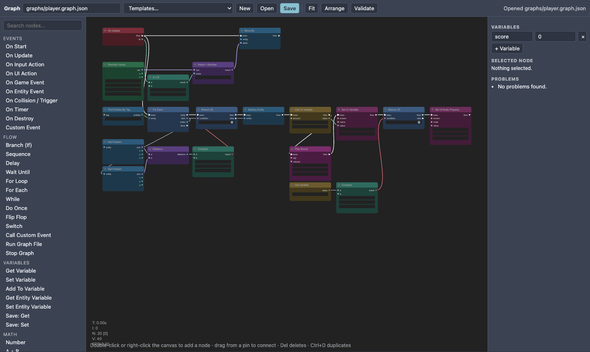
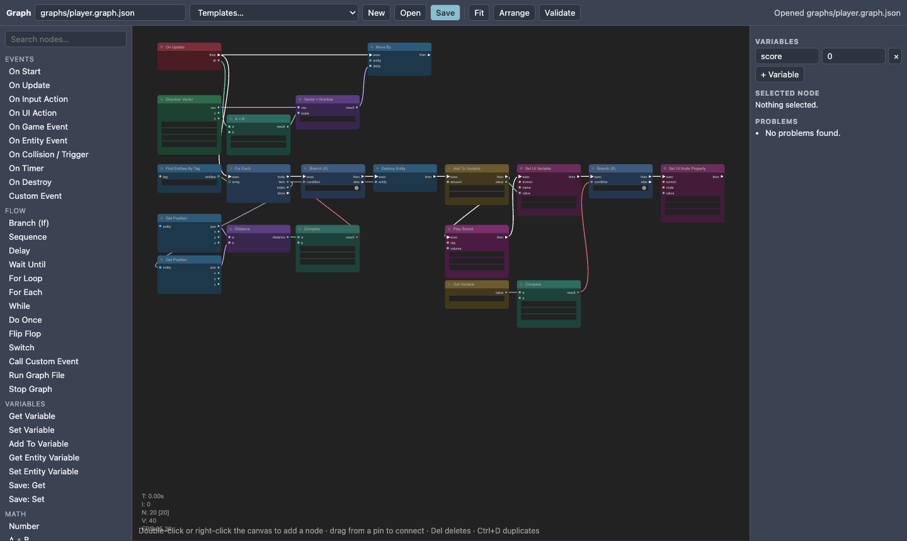
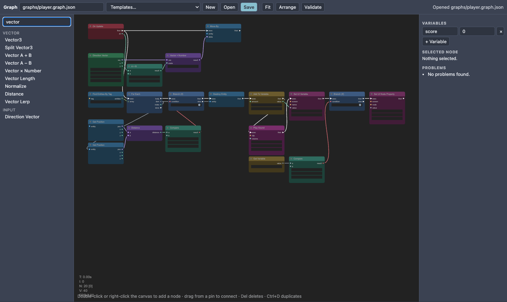
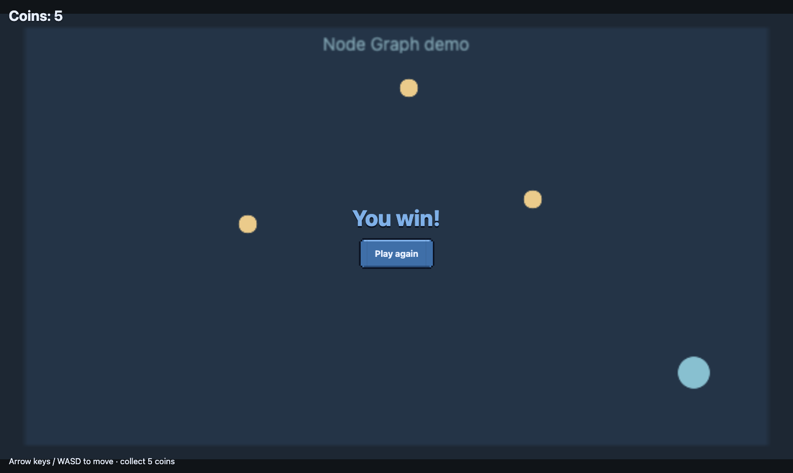

Node graphs (visual scripting)
A node graph is a program you draw. Boxes (nodes) do one thing each; wires carry the flow of time and the values between them. Use graphs for game rules, enemy behaviour, UI reactions and scene flow, or mix them with scripts and event sheets. The canvas is litegraph.js (MIT); the nodes and the runner are Nord's own, so a graph can use everything in the engine.

Open the Graph editor#
- Window ▸ Graph, command palette ▸ Graph editor, or double-click any
*.graph.jsonin Assets. - Assets ▸ right-click ▸ New graph creates a blank one; Hierarchy ▸ Create ▸ Graph (visual script) creates an entity that already runs a graph file.
- Layout preset: Window ▸ Layout ▸ Visual scripting + UI.
Your first graph in two minutes#
- In the Graph tab press Templates… ▸ Hello (On Start → Log). Two nodes appear, connected: On Start → Log.
- Change the Log's
messagewidget to anything you like. Save asgraphs/hello.graph.json. - In the Hierarchy create an entity with Create ▸ Graph (visual script) and set its
filetographs/hello.graph.json. - Play. Your message appears in the Console.
Reading a graph#
- Red nodes are events: they start a chain. Blue/yellow/purple… colours group the categories (Flow, Variables, Math, Entity, UI…).
- Left side of a node = inputs, right side = outputs. A white arrow pin is a flow pin; the first output of most flow nodes is named then.
- The widgets inside a node (numbers, text boxes, drop-downs) are the values used when the matching input has no wire.
- Hover pins for their type. Wires only connect compatible types; any connects to everything.

Adding nodes#
- Search the palette on the left and double-click an entry, or drag it onto the canvas.
- Or double-click an empty spot on the canvas to open litegraph's search box (type a few letters, press Enter).
- Drag from an output pin and release on empty canvas to get a menu of nodes that fit.

Events: how a flow starts#
| Event node | Fires when | Outputs |
|---|---|---|
| On Start | the first frame the graph runs | — |
| On Update | every frame | dt seconds |
| On Input Action | an action (jump, fire…) is pressed / released / held |
— |
| On UI Action | a UI button's Action name is pressed (UI Designer) | payload |
| On Game Event / On Entity Event | game.events.emit(name) / entity.emit(name) |
data |
| On Collision / Trigger | the physics reports a hit on this entity | other, info |
| On Timer | every N seconds | count |
| On Destroy | the entity is destroyed | — |
| Custom Event | another chain uses Call Custom Event | a, b |
Flow: ordering, choices, loops, waiting#
Branch (If), Sequence (three steps), Switch, For Loop, For Each, While, Do Once, Flip Flop, Delay, Wait Until, Call Custom Event, Run Graph File, Stop Graph. Waiting nodes pause only their own chain.
Variables#
Open the Variables panel (right): add a name and a default (0, "text", [1,2,3]). Use Get Variable, Set Variable and Add To Variable (choose the name in the widget). Every running graph has its own copy. Other places data lives: Entity Variable nodes (entity.vars) and Save: Get/Set (persistent save data).
The built-in node families#
Math (+ − × ÷, clamp, lerp, remap, random, time) · Logic (compare, and/or/not, select) · Vector (make/split, add, scale, length, normalize, distance, lerp) · Text (join, format {a}, to text/number) · Array · Entity (find by name/tag, position, rotation, scale, enable, destroy, spawn prefab, clone, tween, set component value) · Physics (velocity, impulse, grounded) · Input (action held/pressed, axis, direction vector, pointer) · UI (load screen, show/hide, set text/variable/property, skin) · Audio (sound, music, volume) · Game (load scene, restart, pause, time scale, emit event, log). The full table with every pin is in the Node graph reference.
Anything the engine can do: the Advanced nodes#
If there is no ready-made node, reach the engine directly:
- Get Property / Set Property: read or write any path on any object, e.g.
pos.0orvars.hp. - Call Method: call any function (scripts, components, services) and use its result.
- Game / Scene Service:
game,scene,input,audio,ui,physics,events,save. - Entity Script and Entity Component: get your own script instance or a component's data.
- JavaScript Expression (a value) and Run JavaScript (statements): variables
a b c d ctx game scene entity varsare available.
Attach and run#
| How | Use for |
|---|---|
graph component on an entity (file) |
one entity's behaviour; this entity is the owner |
Scene setting "graphs": [...] |
game rules and HUD, no owner |
| Run Graph File node | reuse a graph from another graph |
Checking your work#
- Validate lists unknown nodes, graphs with no event, and flow nodes no event can reach ("never runs").
- Log nodes print to the Console. Runtime errors are shown there as
graph <file>; the rest of the game keeps running. - An infinite loop is stopped after 200 000 steps with a clear error instead of freezing the game.
Subgraphs and the live flow#
Select some nodes and press Make subgraph: they move into their own graph file (<graph>-sub1.graph.json) and one Run Graph File node takes their place. One flow link must enter the selection and at most one may leave it; up to two values can go in (they appear inside as variables a and b) and up to two can come out (through a Return node, as the call node's a / b outputs). While the game plays and the Graph tab is open, nodes that run flash green, so you can watch the flow.
Example: Coin Collector#
Open New project ▸ Node graph: coin collector (or examples/nodegraph-coins). No scripts: the player graph moves the player, finds coins, picks them up and updates the HUD; the scene graph loads the HUD made in the UI Designer. Follow T46.

See also#
Node graph reference · T46 Coin Collector · UI Designer · Event sheets · Scripting
Troubleshooting: "my graph does nothing"#
| Symptom | Fix |
|---|---|
| Nothing happens, no Console output | The graph is not attached. Validate shows "Nothing runs this graph yet": press Add to current scene, save the scene (Cmd/Ctrl+S) and Play. Or add the graph component to an entity. |
| Log node prints nothing | Make sure a flow wire (white arrow) reaches it from an event node, and that event can fire (see the table above). Output appears in the editor Console tab while playing; see Logging. |
| "never runs" in Problems | That node is not connected to any red event node. |
| On Input Action never fires | The action name must exist in the project's input settings (jump, fire, …). |
| An action from a UI button is ignored | Names must match exactly: the button's Action and the On UI Action node. |
Errors in red graph graphs/x.graph.json |
The message names the node. Fix it; other chains keep running. |
Check yourself#
- Save the project, then repeat the action from the section you used. Confirm the stated result before moving on.
- If Play fails, check the Console for the first error and compare file paths and capitalisation with the example.
- For platform or feature limits, check Known issues.
Next: Choose a worked example. Back to: Manual reading paths.